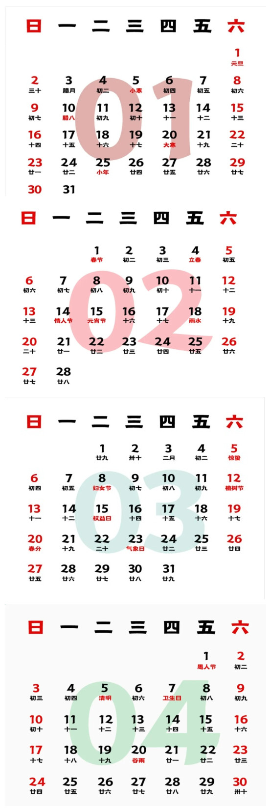
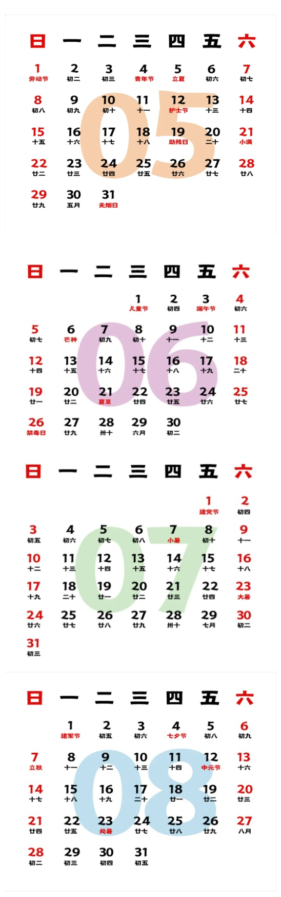
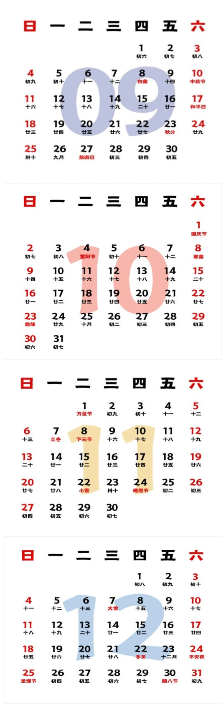

主页
老蔡网页
大型纪录片
《先生十集》
《百年南社六集》
《西南联大纪录片》
培训
课程（一）
W3Schools
codeSTACKr
Kevin Powell
Easy Tutorials
Python
彭彭课程
莫烦教学
课程（二）
DeepLearing.AI
Coursera
Hung-YiLee
课程（三）
Potoshop
Office
旅游
旅游（一）
冰岛游
北欧游轮游
挪威游
北美西部游
旅游（二）
瑞士游2019（一）
瑞士游2019（二）
瑞士游2019（三）
意大利和法国南部游（一）
意大利和法国南部游（二）
旅游（三）
云南昆明游
日本东京游
宝岛台湾游（一）
宝岛台湾游（二）
旅游（四）
我的旅游页
卢浮宫照片
音乐
小夜曲
托赛里小夜曲
莫扎特小夜曲
舒伯特小夜曲
施特劳斯
蓝色多瑙河
皇帝圆舞曲
春之声圆舞曲
贝多芬
命运交响曲
田园交响曲
第七交响曲
第八交响曲
第九交响曲
活动
浙江大学西迁宜州办学80周年纪念
浙江大学西迁宜州办学80周年纪念活动
浙江大学西迁宜州办学80周年宜州新闻
我在浙大西迁宜山办学80周年会上的发言
在浙大西迁冝山办学周年80周年纪念大会上的发言(语音）
浙大西迁遵义办学老照片集锦
百年南社活动
《陈去病全集》序言-杨天石
《陈去病全集》
其他
中关村照片
周恩来总理照片100张
我的相册集锦
书籍
我的著作（一）
中关村回忆
竺可桢校长和浙江大学
蔡邦华院士诞辰110周年纪念文集
我的求是之行（简）
欧洲八国印象（简）
跟着我去意大利（简）
陈绵祥诗词辑存（简）
我在Amazon网站上的著作（繁）（二）
求是之行-- 重走浙大西遷路
探索浙大“東方劍橋”之說: 重走浙大西遷路
陳緜祥詩詞輯存
歐洲八國游記
瑞士深度遊記
我的文章
以“求是”精神，正本溯源，李约瑟访问浙大补录
忆自焚而亡的大学同学杨烨
一段塵封的台大光復的歷史和幾位重要人物
南社和中国科学社
钱学森留下的珍贵精神遗产（《中关村回忆》中没收录）
我的论文
A Proposed Chinese Language Videotex and Teletext Standard
A Survey of Various Chinese Ideographic Character Sets for Information Exchange
Extension of NAPLPS Videotex and Teletext Standard to the Chinese Language
人工智能在中文电脑中的应用
1987年前我在国内的其他文章
1987年前我的其他学术文章篇头
视频
视频1
蔡邦华院士诞辰110周年纪念视频
震撼！开国大典上的10位浙大人！
蔡小麗画册
视频2
中国教育报道_先生回来展
联系
联系人
老蔡（613）823-4197
蔡蕾（847）770-5855
Dr.Kenneth Orbeck(613)738-7660
  